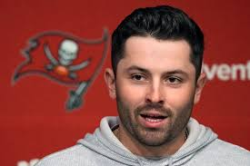
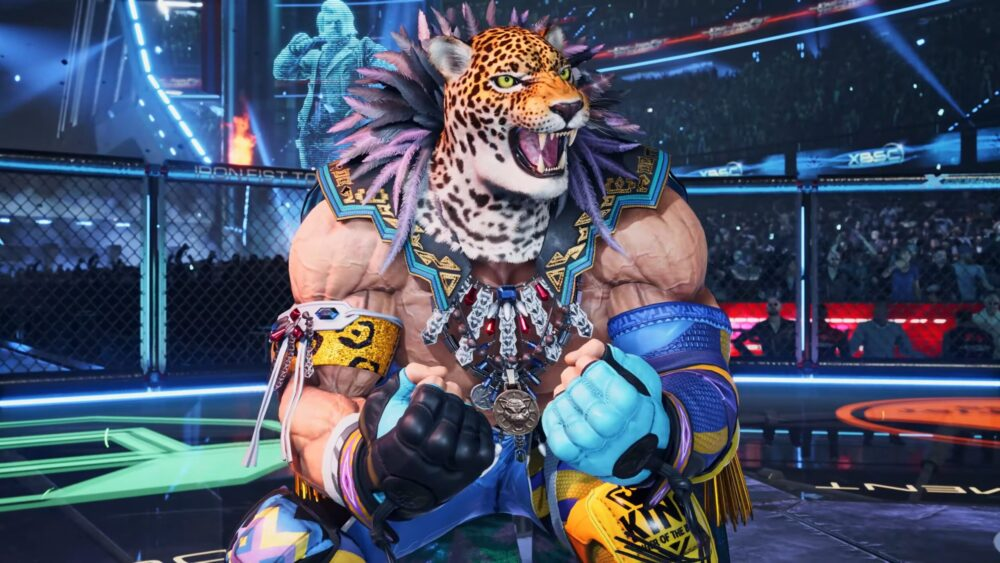

About Us
Our Story
We are your local, St. Pete based fishing charter company — Yellow-Fin Fishing! Our company was born in 2024 from a family with deep ties to the sport of fishing. Our family has been fishing Tampa Bay waters for sport and recreation spanning decades, and we finally have the opportunity to deliver our knowledge and passion for fishing to you!
We offer full inshore & offshore chartering services led by experienced, passionate captains who know these waters better than anyone. We understand that the hobby of fishing can be expensive, so we also offer rental fishing gear and kayak rentals for all anglers — whether you are a first-time fisherman or a seasoned veteran looking to explore Tampa Bay in a new way. Yellow-Fin Fishing is more than a charter company; we are a family-run experience built on a love for the water.
Meet Your Captains

Captain Baker Mayfield
Offshore Captain
You may know Baker Mayfield from his decorated career on the football field, but during the NFL offseason, Baker trades his helmet for a captain's hat as the main offshore captain of Yellow-Fin Fishing Charter. His passion for the open water rivals his passion for the game, and our guests are all the better for it.
Baker's specialty is Tuna fishing, and his ability to locate and land Tuna in the Gulf is second to none. However, his expertise extends well beyond — he is exceptional at catching most offshore fish species, making every deep-sea trip an unforgettable experience.

Captain King
Inshore Captain
Once feared across the world's greatest fighting arenas as the legendary luchador King from the Tekken series, our Captain King has retired from the ring and joined the Yellow-Fin Fishing crew. He has brought that same relentless drive and championship spirit to the waters of Tampa Bay, quickly establishing himself as the #1 inshore captain in the Tampa Bay area.
King's specialty is Snook fishing — his ability to read the flats, mangroves, and backwaters of Tampa Bay is truly unmatched. Whether you're after Snook, Redfish, Trout, or Tarpon, King is proficient at catching all inshore species and will put you on the fish every single time.